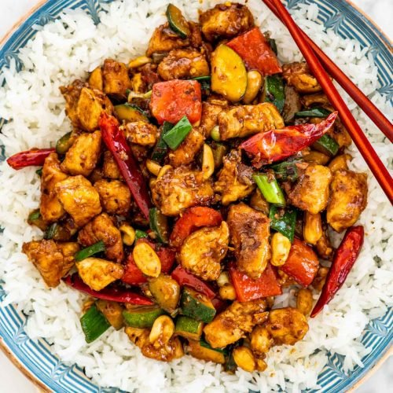

Recipe for Kung Pao Chicken

Kung Pao chicken, also transcribed Gong Bao or Kung Po, is a spicy, stir-fried Chinese dish made with cubes of chicken, peanuts, vegetables, and chili peppers.
The classic dish in Sichuan cuisine originated in the Sichuan Province of south-western China and includes Sichuan peppercorns.
The main ingredients for Kung Pao Chicken are:
- Boneless skinless chicken breast
- Soy sauce (or tamari)
- Vinegar (rice vinegar or sherry vinegar)
- Cornstarch
- Granulated sugar
- Toasted sesame oil
- Red & green bell peppers
- Green onions
- Cashews
- Driedred chili peppers
- Fresh garlic & ginger
How to Make Kung Pao Chicken:
- Make the Kung Pao sauce: mix the soy sauce, vinegar and sugar in a bowl. (yeah, it’s that simple.)
- Prep the chicken! Cut the boneless, skinless chicken breast into uniform strips. This is a little easier to do if your chicken is slightly frozen. Then, toss it in a little soy sauce and cornstarch to coat.
- Cook the chicken until crispy! Working in batches so as not to overcrowd the pan, stir-fry the chicken pieces in sesame oil until they're cooked through and gorgeously crispy.
- Stir-fry! Stir-fry the bell peppers until they're a little soft. Then add the scallions, cashews, ginger, garlic, and dried chili peppers. Stir fry all of that for a minute or two, and then stir in the Kung Pao sauce and cooked chicken.
- Simmer. Let all of the flavors meld over the heat for a few more minutes. The Kung Pao sauce will thicken slightly and really coat the veggies and chicken, which is what you want.
- Serve! We love to serve this over steaming bowls of white or brown rice.
Get back to other recipes.